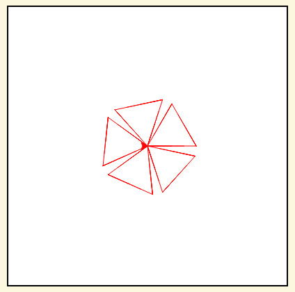

5.2. Function Definition¶
The syntax for creating a named function, a function definition, is:
def name( parameters ):
statements
You can make up any names you want for the functions you create, except that you can’t use a name that is a Python keyword, and the names must follow the rules for legal identifiers that were given previously. The parameters specify what information, if any, you have to provide in order to use the new function. Another way to say this is that the parameters specify what the function needs to do its work.
There can be any number of statements inside the function, but they have to be indented from the def. In the
examples in this book, we will use the standard indentation of four spaces. Function definitions are the third of
several compound statements we will see, all of which have the same pattern:
A header line which begins with a keyword and ends with a colon.
A body consisting of one or more Python statements, each indented the same amount – 4 spaces is the Python standard – from the header line.
We’ve already seen the for statement which has the same structure, with an indented block of code, and the
if, elif, and else statements that do so as well.
In a function definition, the keyword in the header is def, which is followed by the name of the function and
some parameter names enclosed in parentheses. The parameter list may be empty, or it may contain any number of
parameters separated from one another by commas. In either case, the parentheses are required.
We will come back to parameters in Chapter 9. In this chapter we will focus on creating very simple functions that don’t take any parameters. This way you can focus on understanding how to define and invoke (call) functions, and what happens when a function is executed.
Here’s the definition of a simple function, hello.
docstrings
If the first thing after the function header is a string (some tools insist that it must be a triple-quoted string), it is called a docstring and gets special treatment in Python and in some of the programming tools.
Another way to retrieve this information is to use the interactive
interpreter, and enter the expression <function_name>.__doc__, which will retrieve the
docstring for the function. So the string you write as documentation at the start of a function is
retrievable by python tools at runtime. This is different from comments in your code,
which are completely eliminated when the program is parsed.
By convention, Python programmers use docstrings for the key documentation of their functions.
By convention, function definitions go at the top of a file, after the import statements, but before any other code. You should always put your functions at the top like that. What is critical is that the Python interpreter needs to see the function definition before it sees any calls to that function. The example below doesn’t work, because the function definition is after the function invocation.
Note that when you run the code above, the error you get is a NameError. The Python Interpreter has no idea what ‘goodbye’ is, because it hasn’t seen anything with that name yet. Fix the code above so that it works.
We can apply functions to make more interesting and complex turtle drawings.
The above example has two different functions: draw_small_square and draw_big_square. In Chapter 9, when we talk about functions with parameters, we will show how to just have one function to draw a square of any size, by passing the length of the side in as a parameter.
Each of the two functions has a docstring comment and then three lines of code, all indented. Make sure you know where the body of the function ends — it depends on the indentation and the blank lines don’t count for this purpose! This code example calls the two different square functions multiple times from within a for loop. Inside the for loop, we set the pen colour, change the turtle angle, call the function to draw a big square, then change the pen colour again, turn the turtle again, and call the function to draw a small square. The loop runs 12 times. In each loop iteration, the turtle turns a total of 30 degrees, so in total the turtle turns 360 degrees, completing a full revolution.
Check your understanding
Write a turtle program that includes a function to draw a triangle (hint: to draw a triangle, turn the turtle 120 degrees three times). Then use a for loop to have a turtle draw five triangles to make a pattern like the one shown above. Turn the turtle each time in the for loop before calling the triangle function. How much to turn the turtle? Divide the number of degrees in a circle by the number of times you want to turn.